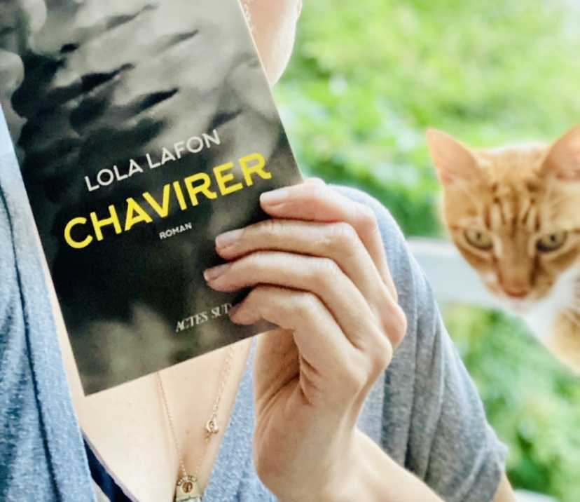

Neuranatomie #3
Le schéma
Il est inutile de chercher à illuminer les imbéciles heureux face à un énième charlatan numérique. Qui sommes-nous pour prétendre nous interposer entre un individu et son destin ? Au sein de l’économie de l’influenceur, le comportement humain général peut se définir en anglais : thirsty as fuck.
Conseil aux aspirants influenceurs : ne cherchez pas le buzz en vous frottant à des autistes qui maîtrisent mieux les algorithmes que vous. Il se pourrait bien que certains aient contribué à construire le genre de plateforme que vous cherchez à monétiser à tout prix et qu’ils sachent, potentiellement, appuyer sur les bons boutons pour vous mettre la torgnole numérique de votre vie.
De façon générale, évitez-nous comme la peste, car on ne se privera pas de faire remarquer que le roi est nu, et tous les lâches qui voient votre imposture depuis des lustres se sentiront pousser coui… ehem, des ailes. Contentez-vous d’aller embobiner et plumer votre prochain loin des paratonnerres à bullshit, c’est un conseil d’ami. Les autistes et les chats règnent sur internet depuis bien plus longtemps que vous, primitives créatures que vous êtes.
La cervelette
J’ai vu que le dernier roman de Lola Fafon, Chavirer, serait traduit en espagnol, et cela m’a rappelé à quel point sa lecture m’a passionnée.
Lola Lafon écrit bien et je suis jalouse de la complexité avec laquelle elle parvient à construire ses personnages sans en dire trop, en nous laissant observer le déroulement des évènements.
Cléo a treize ans, est passionnée de modern jazz et va se voir offrir une mystérieuse bourse par une Fondation inconnue. Est alors retracé le système de prédation -sexuel- dans lequel elle va être entraîné et auquel elle va participer à son tour, en entraînant d’autres camarades. C’est toute la complexité du silence autour des réseaux prédateurs, qui comptent sur la complicité des victimes et sur leurs remords concernant leur implication.

Et si vous pensez qu’il ne s’agit que d’une fiction, vous vous trompez.
La dopamine
Vous n’êtes pas à part du reste de l’humanité parce que vous êtes autistes, ou à cause d’un quelconque diagnostic au nom apocalyptique dans votre dossier médical. Vous êtes à part parce que vous réfléchissez à des concepts auxquels personne d’autre ne réfléchit, ou parce que vous connaissez tout d’une certaine espèce de tortues, ou parce que vous arrivez à toucher votre nez avec votre langue.
Vous faites partie des personnes qui peuvent, potentiellement, changer le monde (SURTOUT si vous arrivez à toucher votre nez avec votre langue) (je vous crains et vous respecte). Mais vous pouvez aussi avoir la flemme et ne rien faire, car vous n’êtes au service de personne.
Et que fainéanter, la tête vide, en regardant le plafond ou des canards dans leur mare, est l’un des plaisirs autistiques que le monde productif n’a pas encore réussi à nous ôter.
La sérotonine
Il existe, en France, un refuge de cochons, au nom hilarant de Groin-Groin. Je suis la plus grande fan de Noé le cochon, mais comme je suis fan d’absolument tout animal croisant mon chemin, je ne sais pas ce que vaut cette déclaration.